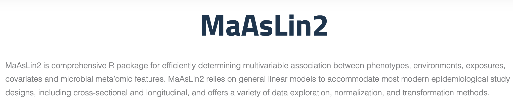
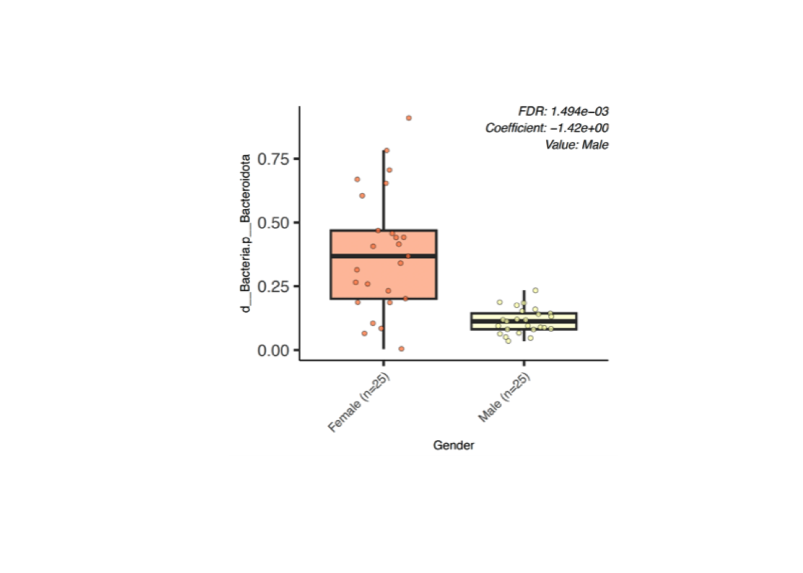
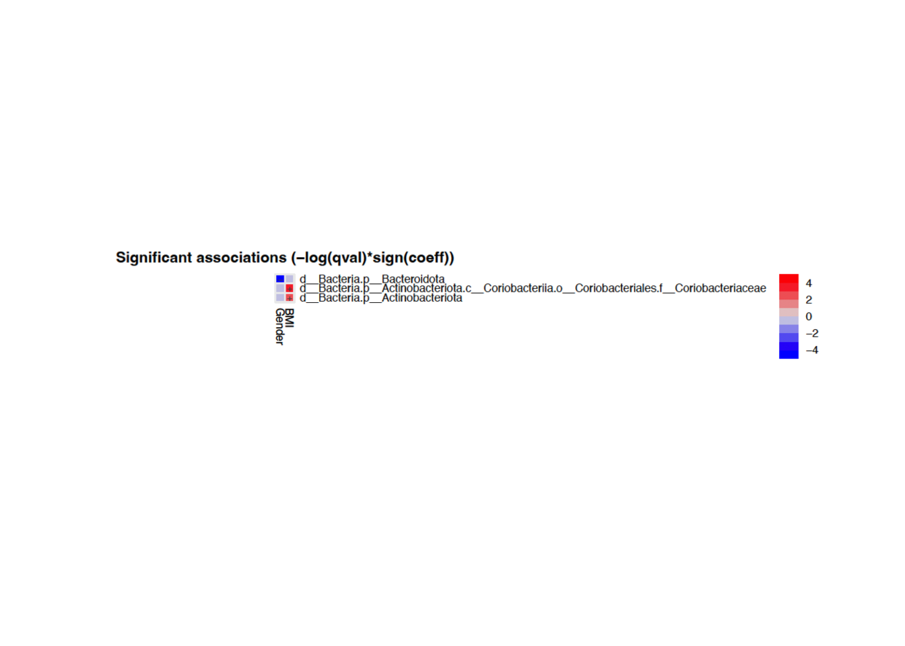

Code
library(tidyverse)
library(Maaslin2)
library(png)
library(grid)This is a Quarto document which nicely combines both R code, its results and text explanation to enable an easy and interactive access for both learners, readers and supervisors to such analyses. To learn more about Quarto see https://quarto.org. By default all code lines are blended, but you can show them by clicking on the code button.

Maaslin2 package can be used in order to automatize linear regression analysis from metagenomics data (typically 16S rRNA gene sequencing data) and most importantly include multivariate analyses in convenient manner getting very appealing graphic results as an output. For more information please visit Maaslin2 tutorial website.
In this analysis we need tidyverse, png, grid and Maaslin2 packages.
library(tidyverse)
library(Maaslin2)
library(png)
library(grid)Typically one needs to input files: separate microorganism abundance table (feature counts) and metadata indicating all factors describing our samples and their values. In this case we have simulated mock data (made to yield some easy-to-interpret results).
bacteria <- read.table("./../input/input_bacteria.csv", header = T, sep = ",", row.names="sample")
bacteria[1:6,2:3] d__Bacteria.p__Acidobacteriota d__Bacteria.p__Actinobacteriota
S1 0 0.014586061
S2 0 0.000903000
S3 0 0.005444646
S4 0 0.004554938
S5 0 0.008124310
S6 0 0.000408000metadata <- read.table("./../input/input_metadata.csv", header = T, sep = ",", row.names="sample")
head(metadata) Gender BMI Age
S1 Male 39.02185 56
S2 Female 26.22268 43
S3 Male 31.63371 75
S4 Female 20.20202 86
S5 Female 24.03461 77
S6 Female 29.96878 53Maaslin2 function execution makes a big output in R console, describing once more parameters of the model and very detailed calculations. You don’t need to look at this output unless something unexpected happen like an error. You might want to look at the last row to understand whether there were significant findings found.
fit_data <- Maaslin2(
bacteria, metadata, './../output/output_Gender',
transform = "LOG", normalization= "NONE",
max_significance=0.25, min_abundance=0.000001,
min_prevalence=0.4,
fixed_effects = c('Gender'),
reference = c("Gender","Female"),
standardize = FALSE)[1] "Warning: Deleting existing log file: ./../output/output_Gender/maaslin2.log"
2024-05-01 19:02:58.649471 INFO::Writing function arguments to log file
2024-05-01 19:02:58.65551 INFO::Verifying options selected are valid
2024-05-01 19:02:58.665178 INFO::Determining format of input files
2024-05-01 19:02:58.66547 INFO::Input format is data samples as rows and metadata samples as rows
2024-05-01 19:02:58.666385 INFO::Formula for fixed effects: expr ~ Gender
2024-05-01 19:02:58.666749 INFO::Filter data based on min abundance and min prevalence
2024-05-01 19:02:58.666917 INFO::Total samples in data: 50
2024-05-01 19:02:58.66708 INFO::Min samples required with min abundance for a feature not to be filtered: 20.000000
2024-05-01 19:02:58.667573 INFO::Total filtered features: 37
2024-05-01 19:02:58.667797 INFO::Filtered feature names from abundance and prevalence filtering: d__Archaea.p__Euryarchaeota, d__Bacteria.p__Acidobacteriota, d__Bacteria.p__Armatimonadota, d__Bacteria.p__Bdellovibrionota, d__Bacteria.p__Campilobacterota, d__Bacteria.p__Cyanobacteria, d__Bacteria.p__Deferribacterota, d__Bacteria.p__Deinococcota, d__Bacteria.p__Elusimicrobiota, d__Bacteria.p__Fusobacteriota, d__Bacteria.p__Gemmatimonadota, d__Bacteria.p__Myxococcota, d__Bacteria.p__Patescibacteria, d__Bacteria.p__Planctomycetota, d__Bacteria.p__Spirochaetota, d__Bacteria.p__Synergistota, d__Archaea.p__Euryarchaeota.c__Methanobacteria.o__Methanobacteriales.f__Methanobacteriaceae, d__Bacteria.p__Acidobacteriota.c__Acidobacteriae.o__Acidobacteriales.f__Acidobacteriaceae_.Subgroup_1., d__Bacteria.p__Acidobacteriota.c__Acidobacteriae.o__Bryobacterales.f__Bryobacteraceae, d__Bacteria.p__Acidobacteriota.c__Blastocatellia.o__Blastocatellales.f__Blastocatellaceae, d__Bacteria.p__Actinobacteriota.c__Actinobacteria.o__Actinomycetales.f__Actinomycetaceae, d__Bacteria.p__Actinobacteriota.c__Actinobacteria.o__Bifidobacteriales.f__Bifidobacteriaceae, d__Bacteria.p__Actinobacteriota.c__Actinobacteria.o__Corynebacteriales.f__Corynebacteriaceae, d__Bacteria.p__Actinobacteriota.c__Actinobacteria.o__Corynebacteriales.f__Nocardiaceae, d__Bacteria.p__Actinobacteriota.c__Actinobacteria.o__Frankiales.f__Nakamurellaceae, d__Bacteria.p__Actinobacteriota.c__Actinobacteria.o__Micrococcales.f__Brevibacteriaceae, d__Bacteria.p__Actinobacteriota.c__Actinobacteria.o__Micrococcales.f__Cellulomonadaceae, d__Bacteria.p__Actinobacteriota.c__Actinobacteria.o__Micrococcales.f__Intrasporangiaceae, d__Bacteria.p__Actinobacteriota.c__Actinobacteria.o__Micrococcales.f__Microbacteriaceae, d__Bacteria.p__Actinobacteriota.c__Actinobacteria.o__Micrococcales.f__Micrococcaceae, d__Bacteria.p__Actinobacteriota.c__Actinobacteria.o__Propionibacteriales.f__Propionibacteriaceae, d__Bacteria.p__Actinobacteriota.c__Coriobacteriia.o__Coriobacteriales.f__Atopobiaceae, d__Bacteria.p__Actinobacteriota.c__Coriobacteriia.o__Coriobacteriales.f__Eggerthellaceae, d__Bacteria.p__Armatimonadota.c__Fimbriimonadia.o__Fimbriimonadales.f__Fimbriimonadaceae, d__Bacteria.p__Bacteroidota.c__Bacteroidia.o__Bacteroidales.f__Dysgonomonadaceae, d__Bacteria.p__Bacteroidota.c__Bacteroidia.o__Bacteroidales.f__Paludibacteraceae, d__Bacteria.p__Bacteroidota.c__Bacteroidia.o__Bacteroidales.f__Porphyromonadaceae
2024-05-01 19:02:58.6682 INFO::Total filtered features with variance filtering: 0
2024-05-01 19:02:58.668436 INFO::Filtered feature names from variance filtering:
2024-05-01 19:02:58.668624 INFO::Running selected normalization method: NONE
2024-05-01 19:02:58.668801 INFO::Bypass z-score application to metadata
2024-05-01 19:02:58.668964 INFO::Running selected transform method: LOG
2024-05-01 19:02:58.669263 INFO::Running selected analysis method: LM
2024-05-01 19:02:58.672738 INFO::Fitting model to feature number 1, d__Bacteria.p__Actinobacteriota
2024-05-01 19:02:58.675606 INFO::Fitting model to feature number 2, d__Bacteria.p__Bacteroidota
2024-05-01 19:02:58.676338 INFO::Fitting model to feature number 3, d__Bacteria.p__Desulfobacterota
2024-05-01 19:02:58.677019 INFO::Fitting model to feature number 4, d__Bacteria.p__Firmicutes
2024-05-01 19:02:58.677808 INFO::Fitting model to feature number 5, d__Bacteria.p__Proteobacteria
2024-05-01 19:02:58.678578 INFO::Fitting model to feature number 6, d__Bacteria.p__Verrucomicrobiota
2024-05-01 19:02:58.679445 INFO::Fitting model to feature number 7, d__Bacteria.p__Actinobacteriota.c__Coriobacteriia.o__Coriobacteriales.f__Coriobacteriaceae
2024-05-01 19:02:58.680255 INFO::Fitting model to feature number 8, d__Bacteria.p__Bacteroidota.c__Bacteroidia.o__Bacteroidales.f__Bacteroidaceae
2024-05-01 19:02:58.68105 INFO::Fitting model to feature number 9, d__Bacteria.p__Bacteroidota.c__Bacteroidia.o__Bacteroidales.f__Barnesiellaceae
2024-05-01 19:02:58.681759 INFO::Fitting model to feature number 10, d__Bacteria.p__Bacteroidota.c__Bacteroidia.o__Bacteroidales.f__Marinifilaceae
2024-05-01 19:02:58.682485 INFO::Fitting model to feature number 11, d__Bacteria.p__Bacteroidota.c__Bacteroidia.o__Bacteroidales.f__Muribaculaceae
2024-05-01 19:02:58.683233 INFO::Fitting model to feature number 12, d__Bacteria.p__Bacteroidota.c__Bacteroidia.o__Bacteroidales.f__Prevotellaceae
2024-05-01 19:02:58.683987 INFO::Fitting model to feature number 13, d__Bacteria.p__Bacteroidota.c__Bacteroidia.o__Bacteroidales.f__Rikenellaceae
2024-05-01 19:02:58.688155 INFO::Counting total values for each feature
2024-05-01 19:02:58.688862 INFO::Writing filtered data to file ./../output/output_Gender/features/filtered_data.tsv
2024-05-01 19:02:58.689789 INFO::Writing filtered, normalized data to file ./../output/output_Gender/features/filtered_data_norm.tsv
2024-05-01 19:02:58.690418 INFO::Writing filtered, normalized, transformed data to file ./../output/output_Gender/features/filtered_data_norm_transformed.tsv
2024-05-01 19:02:58.691268 WARNING::Deleting existing residuals file: ./../output/output_Gender/fits/residuals.rds
2024-05-01 19:02:58.691788 INFO::Writing residuals to file ./../output/output_Gender/fits/residuals.rds
2024-05-01 19:02:58.692294 WARNING::Deleting existing fitted file: ./../output/output_Gender/fits/fitted.rds
2024-05-01 19:02:58.69256 INFO::Writing fitted values to file ./../output/output_Gender/fits/fitted.rds
2024-05-01 19:02:58.692881 INFO::Writing all results to file (ordered by increasing q-values): ./../output/output_Gender/all_results.tsv
2024-05-01 19:02:58.693353 INFO::Writing the significant results (those which are less than or equal to the threshold of 0.250000 ) to file (ordered by increasing q-values): ./../output/output_Gender/significant_results.tsv
2024-05-01 19:02:58.693654 INFO::Writing heatmap of significant results to file: ./../output/output_Gender/heatmap.pdf
[1] "There are no associations to plot!"
2024-05-01 19:02:58.694235 INFO::Writing association plots (one for each significant association) to output folder: ./../output/output_Gender
2024-05-01 19:02:58.694903 INFO::Plotting associations from most to least significant, grouped by metadata
2024-05-01 19:02:58.69515 INFO::Plotting data for metadata number 1, Gender
2024-05-01 19:02:58.708003 INFO::Creating boxplot for categorical data, Gender vs d__Bacteria.p__BacteroidotaYou can see how Maaslin2 algorithm is fitting the model to each individual taxa represented in rows.
After the output one usually goes into ouput folder to check results in excell and pdf formats. Tables contain very detailed statistics and all result ranking whereas pdf figures like the box plot below, focus on single significant hits among microbial taxa
# Set the path to your png file
image_path <- './../output/output_Gender/Gender.png'
# Read the PNG image
img <- readPNG(image_path)
# Use plot to display the image
plot(as.raster(img))
We can see here that Bacrterioidota phylum turned out to be very reduced in Male group compared to Female
We can modify our LM equation by finetuning function arguments, most importantly fixed_effects which points to the factors studied in the analysis. Here we include all three parameters: gender, age and BMI.
fit_data <- Maaslin2(
bacteria, metadata, './../output/output_Gender_Age_BMI',
transform = "LOG", normalization= "NONE",
max_significance=0.25, min_abundance=0.000001,
min_prevalence=0.4,
fixed_effects = c('Gender', 'Age', 'BMI'),
reference = c("Gender","Female"),
standardize = FALSE)When more than one parameter is studied the results can be put out as a heatmap representing increase/decrease in the abundance of listed taxa (rows) and what parameters are statistically making the most significant contribution (columns).
# Set the path to your png file
image_path2 <- './../output/output_Gender_Age_BMI/heatmap.png'
# Read the PNG image
img2 <- readPNG(image_path2)
# Use plot to display the image
plot(as.raster(img2))
Here we see that the effect of Gender on Bacterioidota phylum remains significant, but BMI also plays high role in some taxa variablitity as indicated in BMI column of heatmap: Actinobacteriota